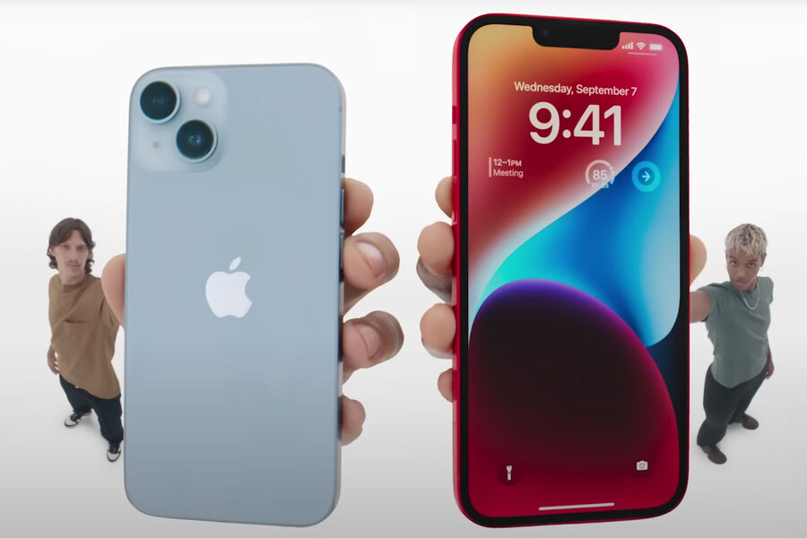

The failure of the iPhone 14 Plus made Apple think about the fate of the iPhone 15
MacRumors: Apple will revise plans for the iPhone 15 line due to the failure of the iPhone 14 Plus

Apple is seriously concerned about low sales of the iPhone 14 Plus and is thinking about how to introduce the base model of a smartphone with a larger screen diagonal in the iPhone 15 line, according to MacRumors, citing insider yeux1122.
According to yeux1122, Apple is currently choosing between two new strategies. In the first case, the American corporation plans to continue to widen the functional gap between the base iPhone and iPhone Pro series. In the second, Apple may lower the price of the iPhone 15 Plus relative to the iPhone 14 Plus in order to make the base model with a larger screen diagonal more attractive to buyers.
MacRumors believes that in the second case, Apple is likely to reduce the cost of the iPhone 15 Plus by $100, that is, to $799. In addition, journalists believe that in this scenario, the company will have to reduce the price of the base iPhone 15 so that it does not intersect with the price tag of the Plus version.
MacRumors noted that although yeux1122's information echoes the data of another well-known analyst Ming-Chi Kuo, his insider should be treated with great skepticism. The fact is that before yeux1122 made both accurate plums about Apple affairs and completely wrong ones.